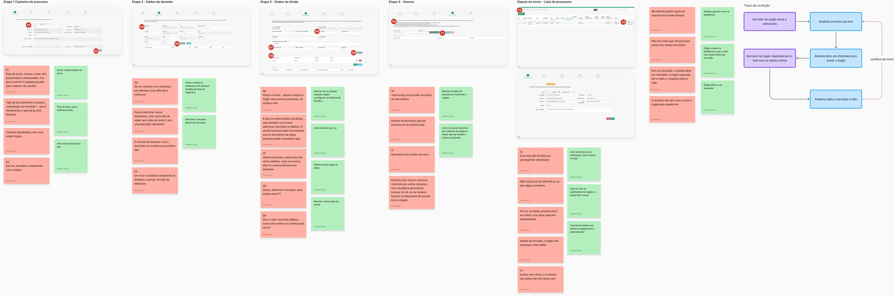
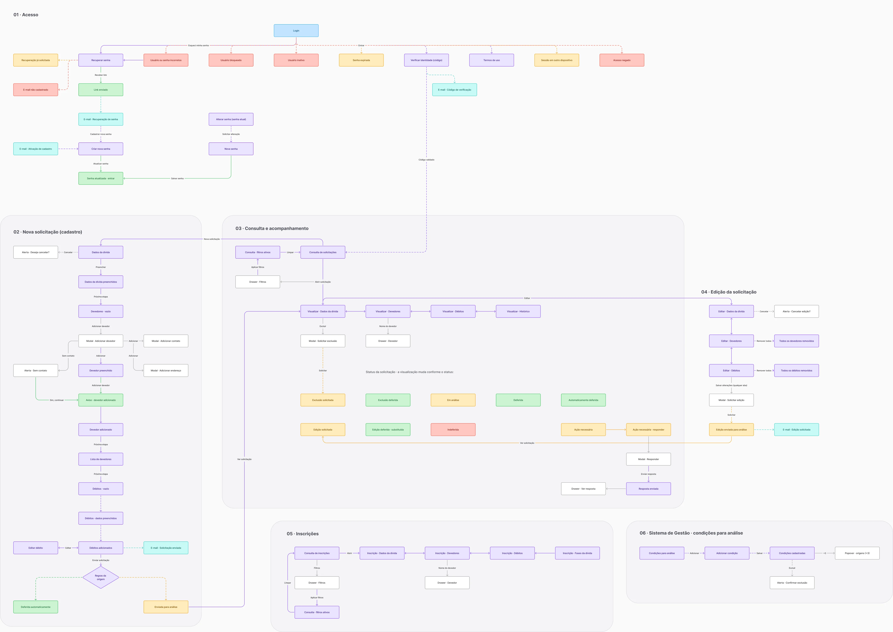
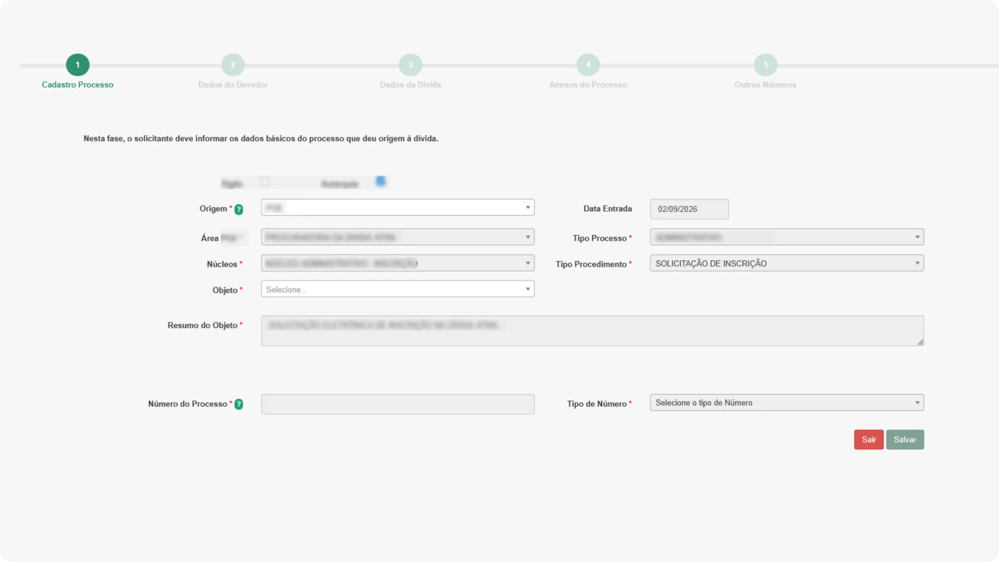
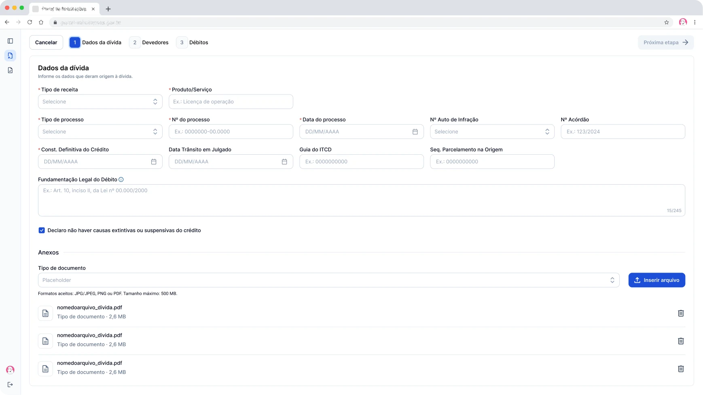
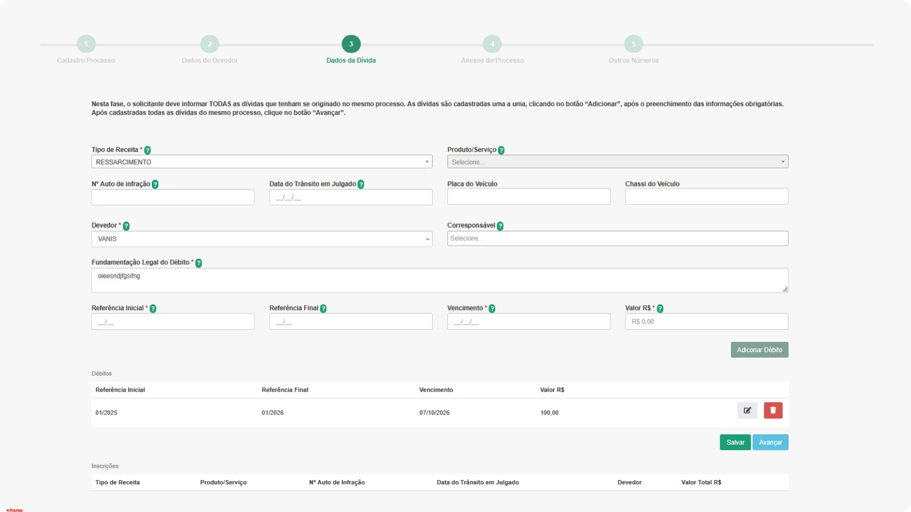
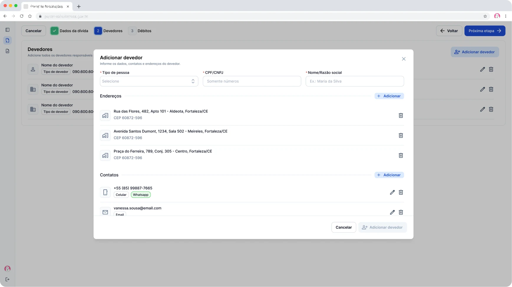
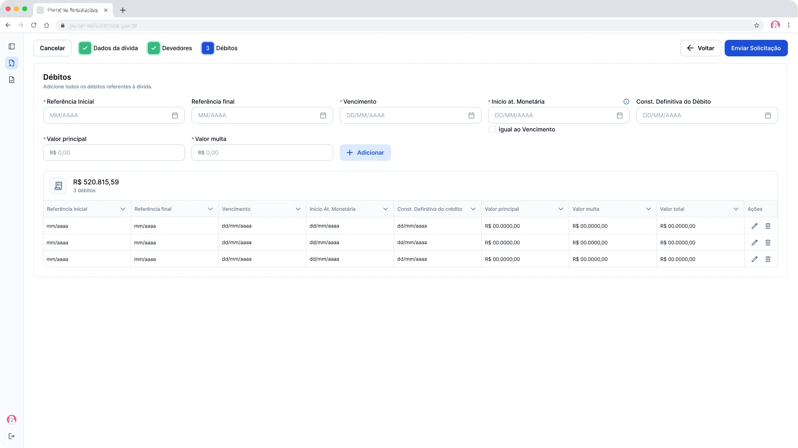
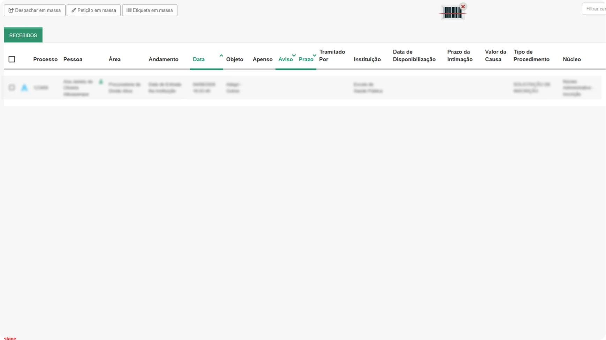
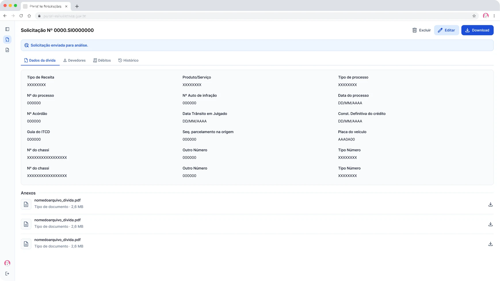
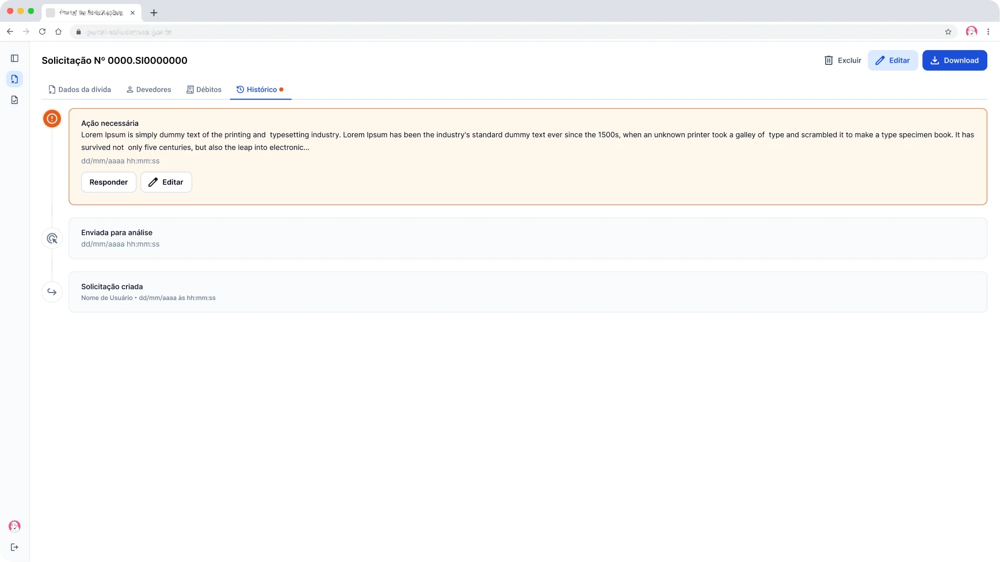

Redesenho do envio da dívida ativa de um estado
Evoluí um fluxo de envio para um sistema em que o servidor cadastra, acompanha e corrige suas solicitações com autonomia.
- Meu papel
- UX/UI Designer
- Cliente
- Procuradoria
- Equipe
- 1 designer, 1 analista de requisitos, 4 devs e 2 QAs
- Período
- 2 meses
O que eu fiz
Redesenhei os fluxos e defini regras, campos e comportamentos junto com o procurador responsável, a coordenação da área e os times de requisitos e desenvolvimento.
Contexto
Quando alguém deixa de pagar um valor ao estado (como uma multa), o órgão que gerou a cobrança não pode cobrar sozinho. Quem faz isso é a procuradoria: ela recebe e analisa a dívida e, se estiver tudo certo, a registra oficialmente, permitindo que o estado faça a cobrança. Por isso, todo órgão público precisa enviar suas dívidas para lá.
-
Dívida no órgão de origem
Um órgão do estado (como secretarias, autarquias), gera multas que não foram pagas e a dívida precisa ser enviada à procuradoria para ser cobrada.
-
Solicitação da dívida
Estamos aqui!O servidor do órgão informa os dados da dívida, os devedores e os débitos e envia a solicitação. Depois, acompanha o status e corrige ou responde quando a procuradoria aponta um problema.
-
Gerenciamento da dívida
A solicitação é deferida automaticamente ou analisada pela procuradoria. Depois de inscrita, a dívida passa a ser gerenciada e cobrada pelo estado.
Proto-personas
Com o prazo que tínhamos, quase tudo que eu sabia sobre esses usuários veio dos stakeholders, que acompanhavam de perto os erros e as dúvidas deles.
Servidor de um órgão estadual - quem envia
35 a 60 anos · não é da área jurídica · pouca familiaridade digital
Objetivo
Enviar a dívida certa e saber em que etapa ela está.
Necessidades
- ver só os campos do órgão dele
- saber o que falta antes de enviar
- acompanhar e corrigir a solicitação depois do envio
Dores
- campos bloqueados ou que não se aplicam ao órgão
- nenhum aviso do que falta para continuar
- depois do envio, não vê o status nem consegue corrigir erros
Analista da dívida ativa - quem recebe e corrige
Trabalha no setor da dívida ativa da procuradoria · confere as solicitações de todos os órgãos
Objetivo
Encontrar os erros e deixar a solicitação pronta para ser inscrita.
Necessidades
- apontar o erro para o órgão dentro do sistema;
- receber a correção no próprio sistema;
- parar de editar a inscrição à mão.
Dores
- para cada erro, abria um chamado;
- a resposta do órgão chegava por e-mail;
- editava a inscrição à mão.
Antes, os dois dependiam de chamados e e-mails para resolver qualquer erro.
Problema
Percorri o fluxo de envio no sistema antigo como se fosse um servidor e fui anotando cada ponto onde ele poderia ter dificuldade e levantei possíveis soluções. O que acontecia depois do envio foi relatado pelos stakeholders.

Em vermelho, os problemas. Em verde, as primeiras ideias de solução.
Redesenho do fluxo
Quando apresentei as soluções aos stakeholders, surgiram outras questões que vieram de pedidos deles, do prazo, e do que era viável tecnicamente. Essas decisões foram negociadas e iteraram o fluxo final.
01. Mesma base visual do sistema de gestão
Os dois sistemas precisavam sair rápido. Então reaproveitei fluxo, componentes e comportamentos que eu já tinha desenhado para o Sistema de Gestão.
02. Uma inscrição por solicitação
Isso significa anexar o mesmo documento e repetir o número do processo em cada inscrição. Escolhemos assim porque misturar várias inscrições no mesmo cadastro gerava conflito. Em compensação o preenchimento do formulário ficou mais linear e intuitivo.
03. Campos definidos pela origem
No Sistema de Gestão, que também desenhei, quem tem permissão, ao cadastrar a origem da dívida, seleciona quais campos aparecem no cadastro da solicitação para cada órgão.
04. Histórico de edições da solicitação
O servidor agora poderia solicitar edições, então elas deveriam ser registradas. Junto com o time de desenvolvimento, pelo prazo e viabilidade técnica, decidimos que cada edição viraria uma nova solicitação, agrupada na original por uma seta de expandir.
05. Timeline do status da solicitação
Foi sugerido um botão de histórico ao lado do status, numa tabela que já tinha muitas colunas e informações. Sugeri que a própria pill ficasse clicável e levasse ao histórico, sem ocupar mais espaço.

Solução
O antes e depois de cada etapa, na ordem do envio.
01 Dados da dívida
Antes
- Os campos bloqueados vinham preenchidos com dados que o sistema já tinha. Como não eram editáveis, não precisavam aparecer.
- O tipo de procedimento era sempre "solicitação de inscrição", que é justamente a ação que o usuário está fazendo.
- Campos como placa e chassi apareciam para todo órgão. O servidor precisava saber de antemão quais se aplicavam à dívida dele.
- Os anexos ficavam numa aba separada, o servidor precisava ler um texto para saber o que anexar.
01 Dados da dívida
Depois
- Os campos com informações que o sistema já tinha saíram da tela, o servidor preenche só o que precisa.
- Aparecem só os campos definidos para o órgão, configurados no Sistema de Gestão.
- Os anexos viraram uma seção desta etapa, e o tipo de documento é escolhido numa lista.
- Os outros números viraram dois campos opcionais, tipo de número e número, para quando ainda forem necessários.
02 Devedores e débitos
Antes
- 14 campos apareciam de uma vez, vários travados sem dizer por quê.
- Só permitia adicionar um contato e endereço por devedor, o que tornava a cobrança mais difícil.
- O servidor cadastrava os devedores numa aba e só na seguinte os ligava à inscrição. Era preciso saber de antemão que cada devedor podia pertencer a uma inscrição diferente.
- Os débitos dividiam a tela com os dados da dívida e o vínculo com o devedor.
- A lista de débitos não mostrava a soma, então o servidor não conferia o valor final.
02.1 Devedores
Depois
- O devedor é adicionado num modal próprio, com contatos e endereços em seções separadas.
- Cada devedor aceita vários contatos e endereços.
- A lista mostra quem já foi incluído antes de seguir, e quando está vazia a tela diz o que fazer.
02.2 Débitos
Depois
- Os débitos ganharam uma etapa própria, com os campos em linha e a tabela logo abaixo.
- Adicionar fica junto dos campos do débito, e Enviar solicitação é a ação principal.
- A tabela mostra o total e a quantidade de débitos, atualizados a cada adição.
03 Consulta das solicitações
Antes
Depois do envio, o servidor via uma lista de processos que não mostrava em que etapa estava o pedido dele.
03 Consulta das solicitações
DepoisUma consulta própria para as solicitações, com o status de cada uma e cards de resumo no topo.
04 Visualizar
Iteração
Uma tela reúne tudo da solicitação, com o status no topo.
05 Editar/responder
AntesPara cada erro, o analista abria um chamado, esperava a resposta por e-mail e editava a inscrição à mão.
05 Editar/responder
Depois
O analista aponta o erro, e o servidor recebe o aviso no sistema e por e-mail, com um botão que leva direto à solicitação, onde pode editar ou só responder.
Próximas iterações
O que eu mudaria na próxima versão.
01. Devedor em drawer, com contato e endereço inline
O drawer manteria a lista de devedores à vista e evitaria abrir um formulário por cima do outro para cadastrar contatos e endereços.
02. Etapa de revisão antes de enviar
Uma tela de leitura final reunindo todos os dados preenchidos e atalhos para editar, o servidor poderia conferir a solicitação inteira antes de enviar.
03. Ação necessária já mostrando o motivo
Com o motivo na própria mensagem, o servidor decide na hora se precisa editar ou só responder, sem abrir a solicitação.
O que vou medir após o lançamento
- 01. Tempo para enviar uma solicitação.
- 02. Chamados e e-mails abertos para cadastrar ou corrigir solicitações.
- 03. Solicitações devolvidas com ação necessária.